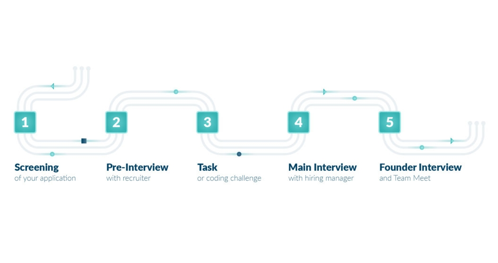

Recruiting is one of the key tasks of the People & Organization Team at Alasco. We want to find the best talents, eager to bring in new ideas whilst challenging and changing an entire industry. Recruiting is always an exciting process, not only for the candidate, but also for us.
Hanna and Nina from the P&O Team have compiled an overview of our recruiting process and a “💡 How to prepare list” below to help you in becoming one of our new team members.
After successfully screening your application, our recruiting process is made up of three parts: Pre-Interview, Main Interview and Founder Interview (usually in combination with a Team Meet).
In this first video call we are looking to get to know you as a person. We will talk about your previous experience and want to find out more about your motivation for working at Alasco. The interview takes about 30 minutes and we will cover questions such as: What is your current role? Why do you want to switch jobs? What is important to you in a workplace? What are you looking for in a new employer? Of course we will also talk about the position you applied for. Finishing the Pre-Interview we are more than happy to answer all your questions and tell you more about the work and life at Alasco!
💡 How to prepare for the Pre-Interview:
Once you pass the Pre-Interview stage you will receive an invitation to the next round of the process. Some positions do have an extra stage solely for a task, e.g. a coding challenge for software engineers. But for the majority of positions it is one stage, which means you will be preparing a task for the Main Interview with the hiring manager. While the Pre-Interview focuses on you as an individual, this 60 to 90 minute interview with your potential new team lead serves as a technical and professionally oriented interview. This is your opportunity to show us your skills, the way you work and how you approach new challenges 📈.
💡 How to prepare for the Main Interview:
The final stage of our interview process consists of an one hour Founder Interview and a brief Team Meet. Alasco started with our three founders and we want to give you and them the opportunity to get to know each other. This truly gives you the chance to understand the intention and the purpose of Alasco. Our Team Meet aims at getting a glimpse of the people you will be working with. They are also curious about meeting new potential colleagues. Maybe there even is a question you didn’t want to ask in the official interview, feel free to get an even deeper insight into Alasco from your future colleagues.
💡 How to prepare for the Founder Interview & Team Meet:
Other than that our number one tip for all the interview is:
You are curious about Alasco, our purpose and our working culture? Check out our open positions here and become part of an industry-changing team. Or get more information about our working culture in this short video from Hanna and Anselm (Alasco co-founder):